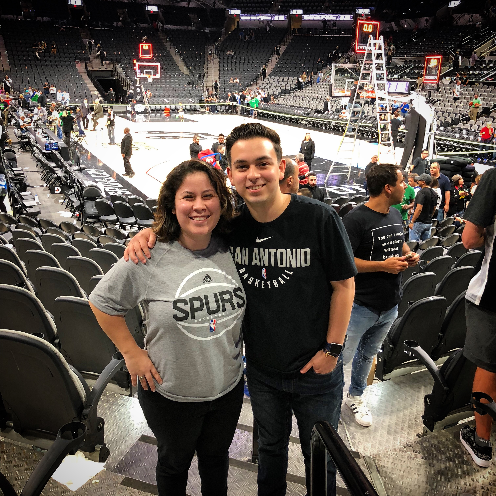

- appples
- oranges
- banana
- kale
For my website, I chose to talk about something I'm a little obsessed with, basketball! More particularly the Spurs! Basketball is one of my two favorite sports. Being born and raised in San Antonio, my favorite team growing up and still til this day are the Spurs! I've been a fan of the Spurs my whole life and have been playing this sport since I was 4! My family and I enjoy watching, and talking about the sport and team. We love it even more when we get the opportunity to attend Spurs games!

home